行星齒輪是齒輪結構的一種，通常由一個或者多個外部齒輪圍繞著一個中心齒輪旋轉，就像行星繞著太陽公轉一樣，因而得名。
行星齒輪的優點在於承載能力大，體積小，純扭矩傳動，工作平穩。而且可以多個行星齒輪互相搭配作用。由於行星齒輪是純扭矩傳動，其有著出色的傳動效率。每一級齒輪傳動之間的效率損失只有3%。基於如此高的傳動效率，行星齒輪能夠保證相當高的動力輸出/輸入比。由於行星齒輪中每個外部齒輪分配到的動力是相等的，所以行星齒輪的動力輸出非常平穩，也常用於各種大型機械和車輛的變速箱中。
以下內容是基於howtomechatronics.com對行星齒輪的介紹，原連結有十分詳細的講解和影片，有興趣的同學可到原網址進一步閱讀。
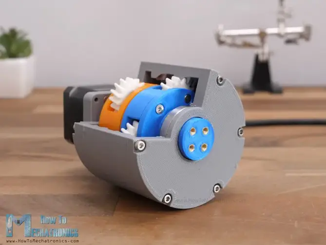
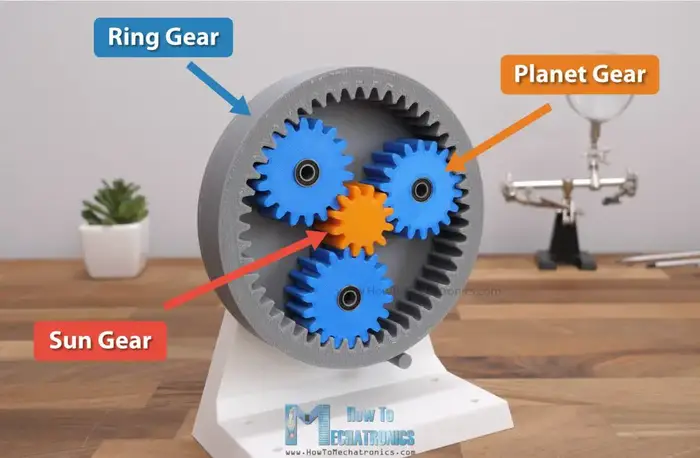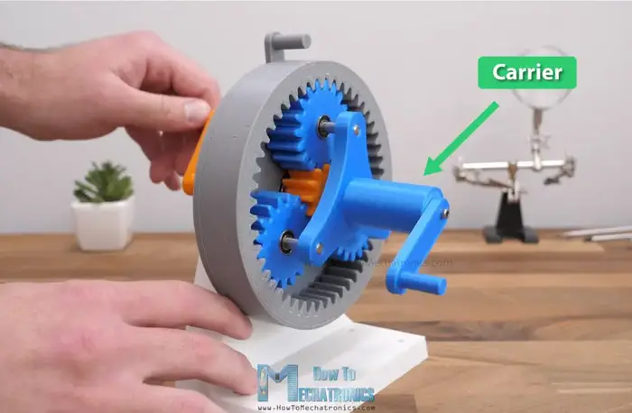
行星齒輪由太陽齒輪(Sun Gear)、行星齒輪(Planet Gear)、外齒圈(Ring Gear)和行星架(Carrier)所組成。一般來說，通常是太陽齒輪(Sun Gear)作為輸入、外齒圈(Ring Gear)保持不動，帶動行星齒輪繞著太陽齒輪旋轉，從而帶動行星架(Carrier)旋轉作為輸出。
太陽齒輪、行星齒輪和外齒圈只要有一項保持不動，另兩項都可以組成不同的齒輪比，這個特性有時會用於自動變速箱中。這裡只介紹最常見的一種，另外的齒輪比可參考上述連結。
我們的目標，是要設計一個3D打印的人字齒輪小玩具，行星齒輪數量
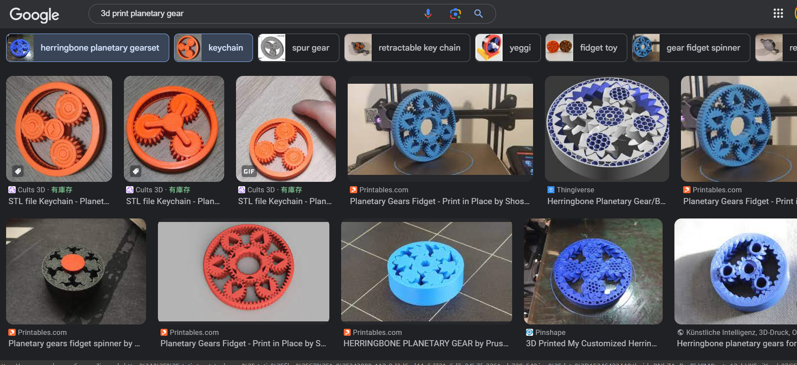
要設計行星齒輪，要設定幾樣條件：
齒輪比：跟一般齒輪的比例計算不同，行星齒輪的齒輪比如下：
這裡的
所以，要設計行星齒輪，首先第一步是要根據目標齒輪比，選定太陽齒輪和外齒圈的齒數。
我們選外齒圈齒數為36齒，如果
行星齒輪：行星齒輪(Planet Gear)要滿足以下條件：
行星齒輪的齒數，跟太陽齒輪和外齒圈的齒數有關，而且計算出來必須是正整數。
所以上面的齒輪箱，
行星齒輪數量：太陽齒輪齒數加上行星齒輪齒數，必須能夠整除行星齒輪數量
其中
上面的設計中，3倍和4倍齒輪箱，兩齒輪齒數相加分別是27和24，
由於行星齒輪需要達到的條件多，設計時不易滿足，可使用以下網站幫忙計算：
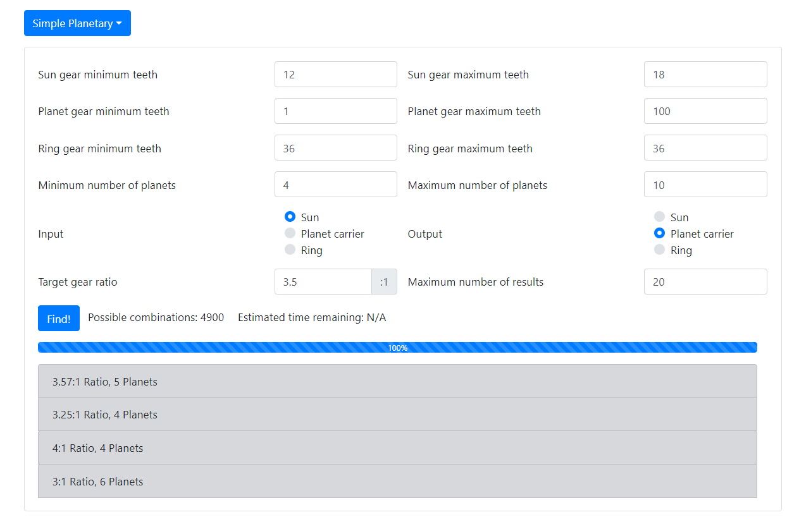
以我的為例，先固定外齒圈為36齒，剛剛初步計算
之後就可以到以下網站：
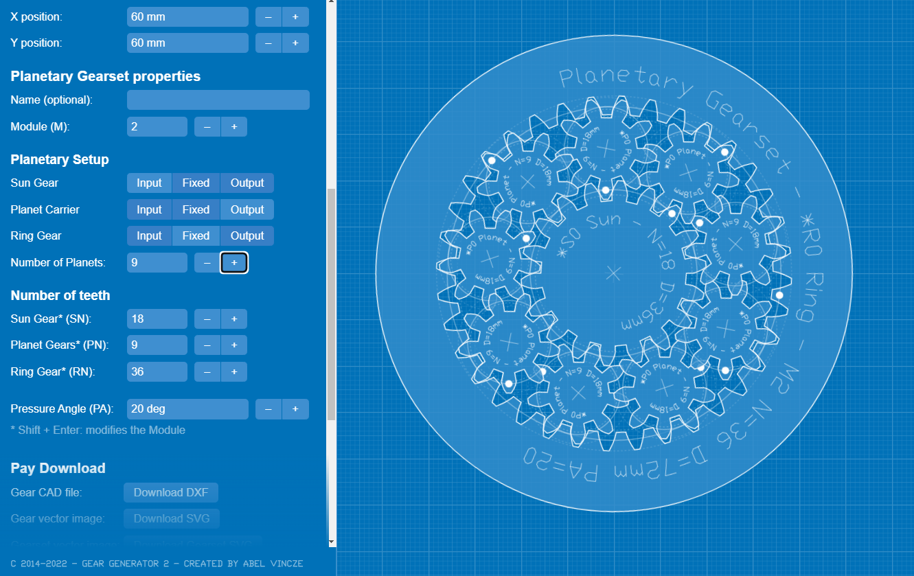
之前我們計算時，
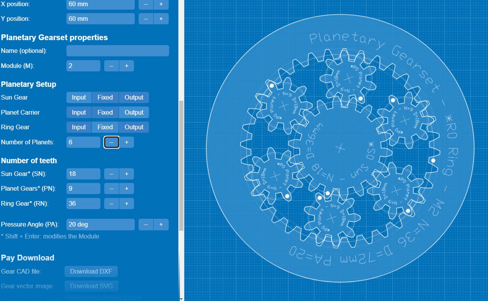
於是我們選擇Planetary Gear Generator計算結果中最多行星齒輪的結果，效果不錯，就選擇這個吧。Gear Generator也可以匯出平面DXF檔直接用鐳射機生產，或匯入到Fusion 360。(注意：這個生成器沒有計算行星齒輪數目的功能，如果條件不允許，出來的行星齒輪角度並非等份)
這一節是基於上一節齒輪教程的延伸，所以只會給簡單的大方向，讓同學可以自行熟習怎樣繪制齒輪。
我們選用1.5mm模數來製作，所以上面的齒輪齒數，全部乘以1.5倍，就是齒距圖直徑。
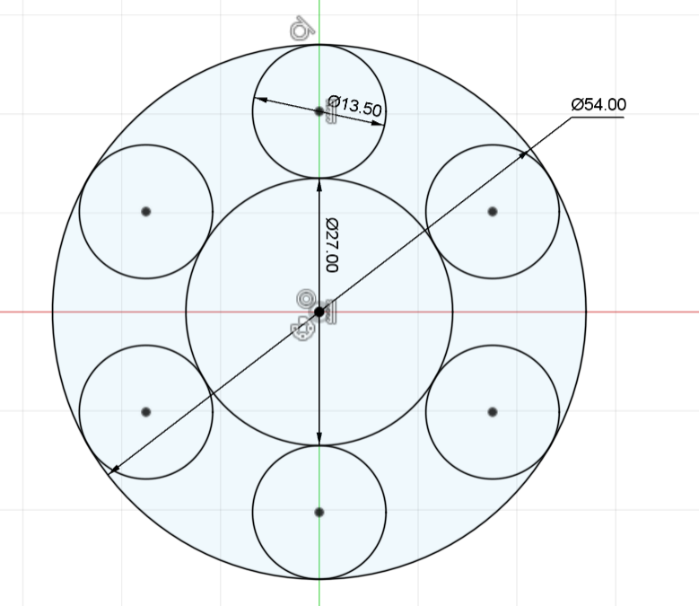
我們希望太陽齒輪、行星齒輪和外齒圈的螺旋角，分別是+30°、-30°和+30°，才能互相囓合；
但由於外齒圈是內齒輪，所以要跟-30°的行星齒輪囓合，就同樣要輸入-30°
另外，由於希望旋轉較暢順，壓力角設定大一點變成30°
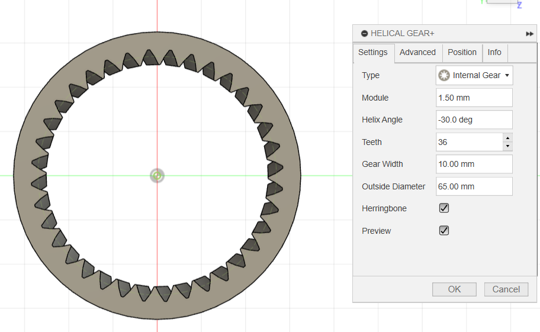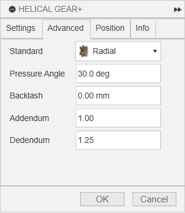
記得將齒輪加入offset face，加入0.15mm間隙
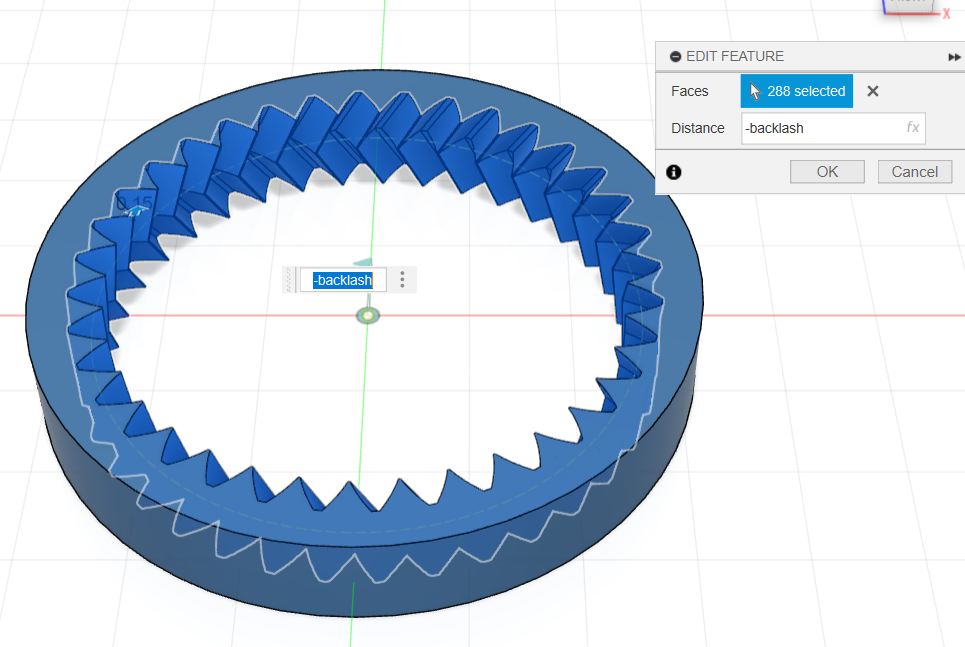
其餘的齒輪步驟一樣，就不再重覆了；
但記得，如果想3D打印能一體成型打印出來的話，行星齒輪要記得對齊和囓合外齒圈和太陽齒輪
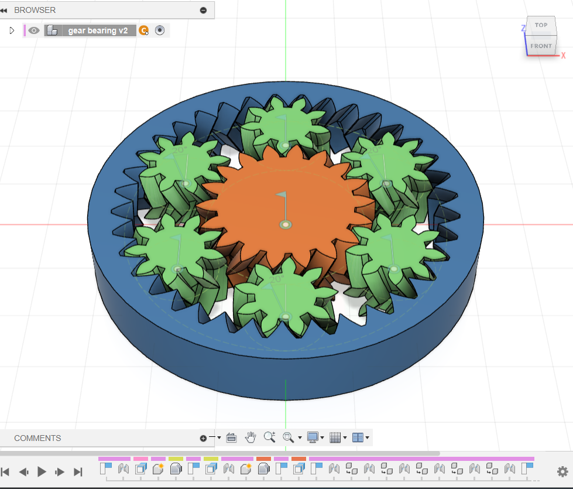